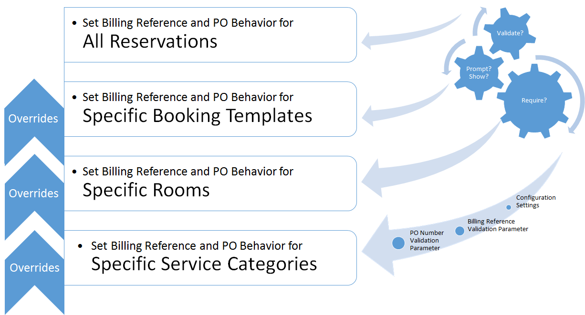
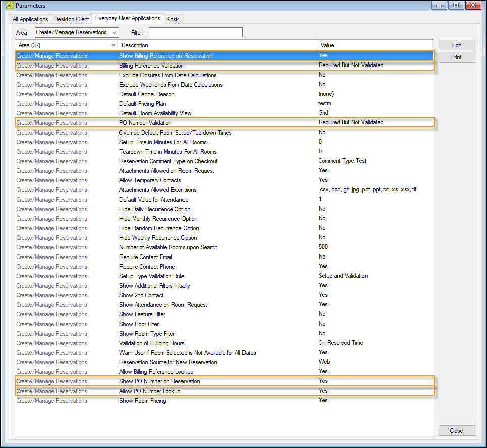
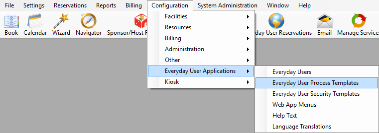
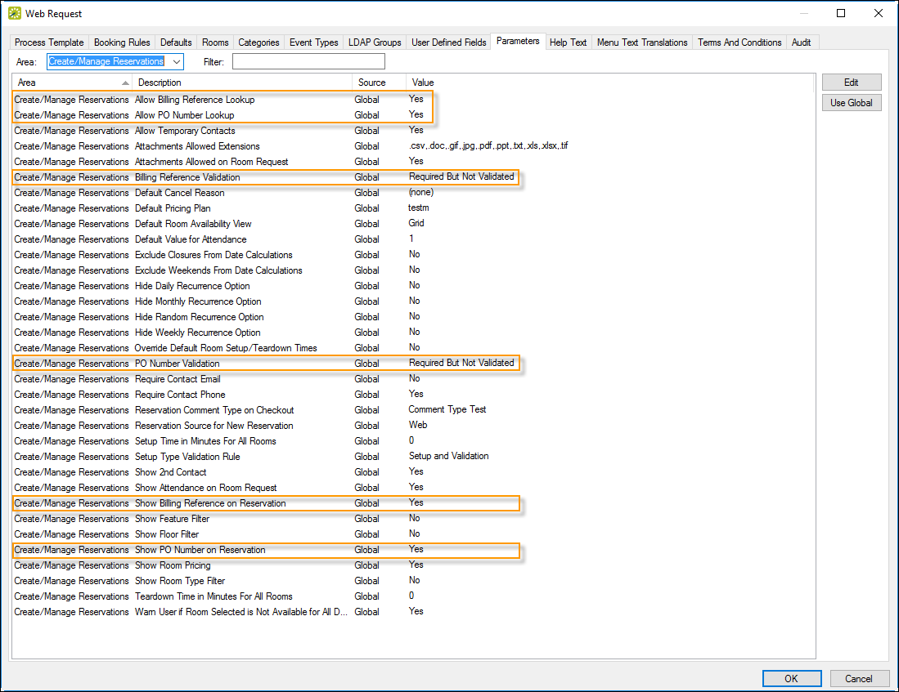

Billing Reference and PO numbers can be added to rooms and services. As an Admin, you can customize the behavior of these fields and when and where they appear and are required at many levels.
The lowest level where you set Billing Reference and PO field behavior (All Reservations, Booking Templates, Rooms, Services) overrides other settings (click to expand).
For example, if you set behavior for a room, it will override settings from a booking template. This ensures that the room billing behavior is not changed by the booking template, so you can always charge for a special room.

From the
You can set global parameters for Billing Reference and PO Number field behavior as shown below (Desktop Client > System Administration > Settings > Parameters > Everyday User Applications tab):
Tip: These settings default to "No."

You can set behavior for Billing Reference and PO Number fields for a specific template when you configure the template, which will override settings at the Global level. These settings default to "No."

From the screen that presents, use the parameters highlighted below to control field behavior.
